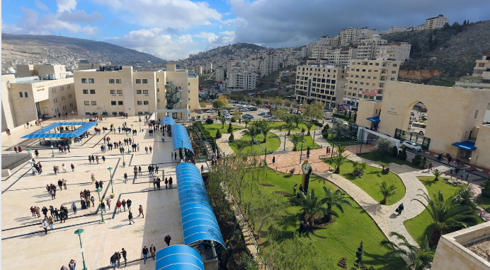
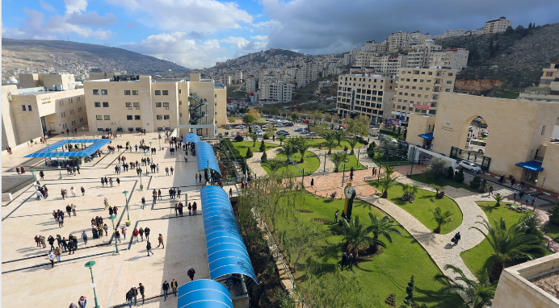

An-Najah National University is a Palestinian university located in the city of Nablus, with a branch in the city of Tulkarm. It is one of the largest Palestinian universities in terms of student enrollment. The university has played a role in the daily political and economic life of Palestine and has produced numerous figures who have made significant contributions to the history of the Palestinian cause. An-Najah National University offers over 180 different programs, including bachelor's degrees, postgraduate studies (master's), and doctoral degrees. These programs cover various fields, including chemistry, physics, religious studies, and approximately 20 specializations in the intermediate diploma.
 

| course name | credit hours | Days | from-to | doctor's name |
|---|---|---|---|---|
| digital image processing | 3 | sun-tue-thursday | 10-11 | anas toma |
| operating system | 3 | sun-tue-thursday | 11-12 | sulaiman abu kharmeh |
| computer networks 2 | 3 | sun-tue-thursday | 9-10 | raed qadi |
| Microcontroller Lab | 1 | wed | 11-2 | sulaiman abu kharmeh |
| Special topics in networks | 3 | mon-wed | 2-3:30 | hanal abu zanet |
| graduation project 2 | 3 | sat | 7-8 | saed tarapiah |